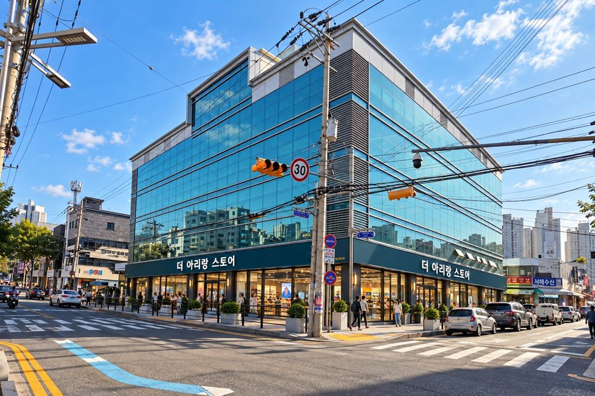

대전 홍도동 · 구 아리랑백화점
건물의 다음 장을 열다.
생활 · 유통 · 건강 · 돌봄을 연결하는 지상 5개 층과 지하 주차장
RENEWAL PROJECT층별 리모델링 진행연결 확인 중
01 / BUILDING EXPLORER

AI 정비 콘셉트 · 실제 설계도 아님
층을 선택해 공간과 공정을 확인하세요.5F — B1
02 / PROJECT SEQUENCE
한눈에 보는 공사 흐름
각 단계의 예정일과 상태는 현장 확인 후 등록합니다. 비어 있는 값은 진행률에 포함하지 않습니다.
| 업무 영역 | 조사·설계 | 철거·정리 | 설비·전기 | 내장·마감 | 집기·시운전 | 검수·인계 |
|---|
03 / SITE ARCHIVE